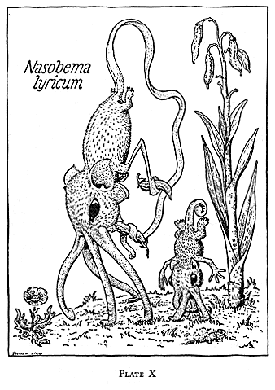

Das Nasobēm (Nasobema lyricum), ein fiktives Tier, das auf seinen Nasen einherschreitet, ist der Titelheld eines Gedichtes seines Schöpfers Christian Morgenstern:
Auf seinen Nasen schreitet
einher das Nasobēm,
von seinem Kind begleitet.
Es steht noch nicht im Brehm.Es steht noch nicht im Meyer.
Und auch im Brockhaus nicht.
Es trat aus meiner Leyer
zum ersten Mal ans Licht.Auf seinen Nasen schreitet
(wie schon gesagt) seitdem,
von seinem Kind begleitet,
einher das Nasobēm.
Das Nasobēm ist ein klassisches Beispiel dafür geworden, wie eine übermütige Idee eines Dichters zahlreiche Folgeschriften hervorgerufen hat, denn inzwischen steht es als fingierter Lexikonartikel auch in Meyers Konversations-Lexikon, im Brockhaus und natürlich auch in der Wikipedia.
Das Gedicht inspirierte auch den namhaften deutschen Zoologen Gerolf Steiner (unter dem Pseudonym Prof. Dr. Harald Stümpke) zu seinem Buch Bau und Leben der Rhinogradentia.

Das Tier wird folgendermaßen beschrieben:
Artname: Nasobema procedens Mor.
Kennzeichen: Die vierhöckrige Nase, auf der sich das braun bis goldbraune und scheue Tier sehr bequem fortbewegt, macht es unverkennbar.
Vorkommen: Mitteleuropa, vorwiegend auf Wiesen, Fluren, Triften. Sehr selten geworden (ausgestorben?). Dämmerungsaktiv. Keine natürlichen Feinde.1